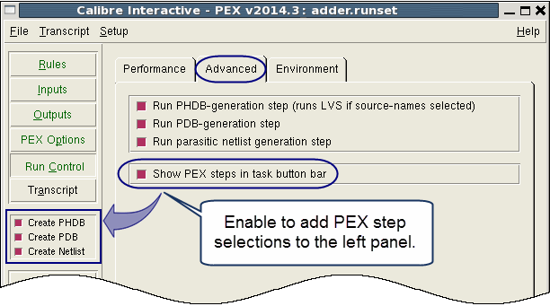

By default, the
GUI executes all three PEX steps (Persistent Hierarchical Database
creation, Parasitic Database creation and formatted pex netlist
creation) each time you click Run PEX. You can select each step
individually, if desired.
Procedure
- Click Run Control on
the left panel.
- Click the Advanced tab.
- Choose the desired PEX steps
to execute, as shown in Figure 1.
Figure 1. Selecting PEX Steps
for Execution
- (Optional) Set options to
control PDB and formatter message output:
- Click the PEX Options button
on the left panel, or choose if the button is
not present.
- Click the Misc tab
on the PEX Options pane.
- Enable
“Display formatter warnings” to add the -fmt_warnings option to
the command line for the formatting stage.
- Enable “Display formatter
information” to add the -fmt_info option to the command line for
the formatting stage.
- Enable “Display PDB THRESHOLDING
messages” to add the -pdb_info option to the command line for the
PDB stage.